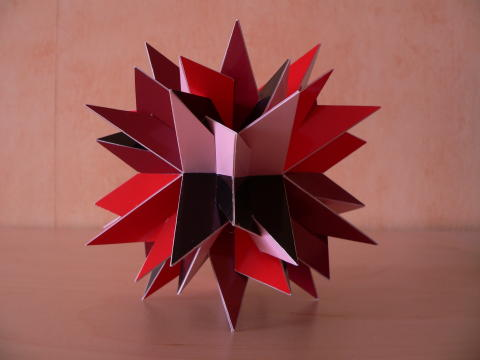
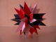

Stellations of a Trapezoidal Icositetrahedron
The models shown above are stellations of a trapezoidal icositetrahedron. That
is a polyhedron consisting of 24 kites with octahedral symmetry.
Many such models exist, this
X3D model
(VRML model)
shows how they are formed,
but the kite-model I used as a base contains four rings of six kites
for which for each ring holds that all the kites are parallel to a (different)
order 3 symmetry axis. The model can also be obtained by adding faces on top of
the edges of a rhombic dodecahedron in such a way that the dihedral angles
between the added face and the two rhombs sharing the edge are equal.
Note that this is not the dual of the (small) rhombicuboctahedron!

In 2005 I wrote a python script that implements the methods and rules as
presented in
[1]
to derive the fully supported stellations.
The enumeration leads to 1455 stellations, that is excluding the base. Of these
364 are fully reflexive and 1091 are enantiomorphous, like the one shown above.
After labeling the cells layer for layer as proposed in
[1]
this model can be identified by the cell notation
"(2E)L(X2C)R"
and the python script generates it as stellation nr 1438.
The picture above shows the stellation in an order 2 axis.
Here are some pictures
-

in an order 3 axis.
-
in an order 4 axis.
Here is another stellation of the same trapezoidal icositetrahedron:
This one is the fully reflexive model that is identified by "QR" and the script
generates it as nr 194.
One can easily recognise the rhombic dodecahedron since it has all edges of one,
but it has all edges of an octahedron as well.
Studying the model a bit closer one can see that it consists of 24 rectangles.
Another example of a stellation that is chiral is shown above. This model is a
compound as well: it is a compound of six irregular tetrahedra.
Since it is a stellation all the triangles are equal.
The stellation can be identified by the cell notation
"(Z)L(SVX)R"
and the script generates this as the 951th polyhedron.
I thought the polyhedron looked as beautiful as simple, but then
surprisingly I noticed that the model was actually pretty difficult to build
and I am not too satisfied with the resulting model, though I don't feel like
starting over just now.
As a compound the polyhedron belongs to the symmetry group
6 | S4 / D2.
The picture above shows the stellation in an order 2 axis.
Here are some pictures
-
in an order 3 axis.
-
in an order 4 axis.
There is another compound of six irregular tetrahedra, this time a fully
reflexive one:
In this beautiful model one can recognise many pairs of tetrahedra for which
edges meet in straight angles: for each order 4 symmetry axis one can recognise
3 separate pairs.
This stellation can be identified as "TV" and the script generates this as the
268th stellation.
The model is easy to build and very rigid.
Here are some pictures
-
in an order 2 axis.
-
in an order 3 axis.
-
in an order 4 axis.
One can see that four edges lying in one plane meet in each other at the same
point on an order 4 axis.
There is a similar compound for which these four edges are spread evenly over a
circle, such that all vertices equal to the vertices of the Archimedean solid
the truncated cube.
I assume that that compound is the stellation of the trapezoidal
icositetrahedron that is the dual of the Rhombicuboctahedron (but I never
cheched that).
More compound stellations can be found, e.g. a compound of four rhombic
hexahedra, which can be identified as "X" or as the 317th stellation:
Here is a chiral model that is surprisingly easy to build.
For each plane it contains 2 pieces only and it results in a nice rigid model.
The stellation can be identified by "(MPS)R" and the script
generates it as the 831th model:
The picture above shows the stellation in an order 4 axis.
Here are some pictures
-
in an order 2 axis.
-
in an order 3 axis.
Another model that is very easy to build for a chiral polyhedron is this one:
I like this stellation, since it looks a bit twisted.
It is a typical stellation for this kind of trapezoidal icositetrahedron
with four rings of six faces, each being parallel to an order 3 axis.
For this stellation a ring is divided
into two triangular rings, each positioned on different sides of the order 3
axis (compared to the polydron centre).
Since the triangular rings are turned compared to each other, it gives a feeling
as if the model is twisted or not balanced, especially if you look in an order
2 symmetry axis.
I used a colouring scheme of four colours where each ring has one colour.
This adds the effect of one colour disappearing when looking in an order 3
symmetry axis.
As you can see, I prefer keeping the models small
(though I fool the eye a bit using the perspective).
This stellation can be identified as "(Z2C)r" and the script
generates this as the 1400th stellation.
Here are some pictures
-
in an order 2 axis.
-
 in an order 3 axis.
in an order 3 axis.
-
in an order 4 axis.
Here is another chiral model that is special for this kind of trapezoidal
icositetrahedron:
 Each ring of parallel kites is transformed into a stick,
so this model consists of four of these sticks (each one around a order 3
symmetry axis).
Again I used four colours, but this time another scheme is used.
At the first glance it might give the impression that faces of the same colour
do not share an edge.
This stellation can be identified as "(Z)r" and the script
generates this as the 1159th stellation.
Here are some pictures
Each ring of parallel kites is transformed into a stick,
so this model consists of four of these sticks (each one around a order 3
symmetry axis).
Again I used four colours, but this time another scheme is used.
At the first glance it might give the impression that faces of the same colour
do not share an edge.
This stellation can be identified as "(Z)r" and the script
generates this as the 1159th stellation.
Here are some pictures
-
in an order 2 axis.
-
in an order 3 axis.
-
 in an order 4 axis.
in an order 4 axis.
Messer, Peter W., The Stellations of the Rhombic Triacontahedron and beyond, Structural Topology 21 (p. 25-46, 1995)
2012-05-30, 21:38
 in an order 3 axis.
in an order 3 axis.

{kind=link}
{kind=link}
{kind=link}
{kind=link}
{kind=link}
{kind=link}
{kind=link}
{kind=link}
{kind=link}
{kind=link}
{kind=link}
{kind=link}
{kind=link}